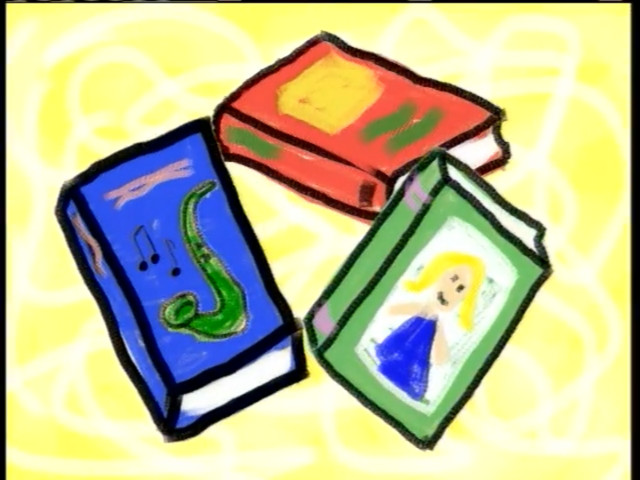
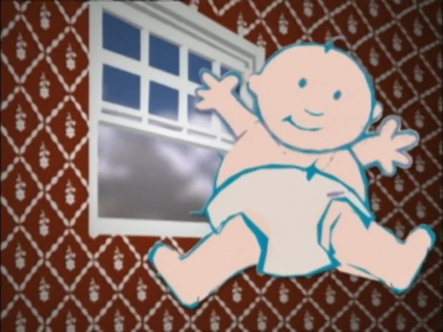
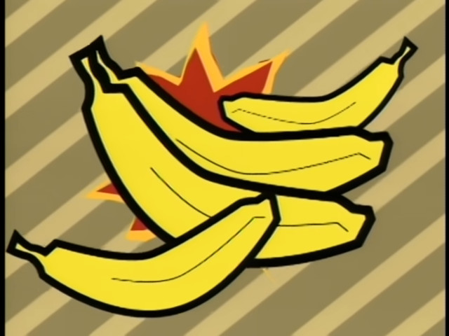
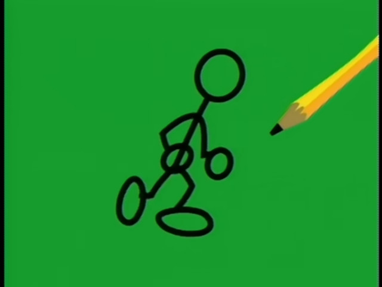
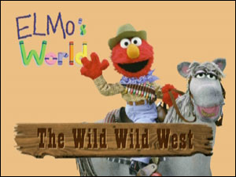
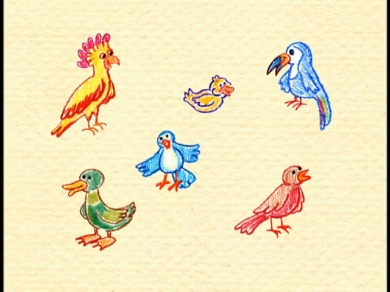

DVD Releases Only
DVD
VCD
|
|---|
| Title: Elmo'nun Dünyası DVD Releases Only DVD VCD |
|  |
|---|
| Dans, Müzik ve Kitaplar! archive.org |
|  |
| Bebekler ve Yavru Köpekler! archive.org |
|  |
| Çiçekler, Bitkiler, Muzlar! archive.org |
|  |
| Şarkılar ve Resimler! archive.org |
 |
| Yaş Günleri ve Oyunlar! archive.org |
|  |
| Vahşi Batı! archive.org |
|  |
| Bahar Neşesi! archive.org |
 |
| Elmo ile Uyku Vakti! archive.org |
 |
| Elmo Kendi Giyiniyor! archive.org |
 |
| Doğal Hayat! archive.org |
 |
| Elmo'nun İki Eli, İki Kulağı ve İki Ayağı Var! archive.org |
| Banyo Keyfi! archive.org |
| Yiyecekler, Su ve Spor! archive.org |
 |
| Elmo ile Güneşli Günler! archive.org |
 |
| Sevimli Hayvanlar! archive.org |